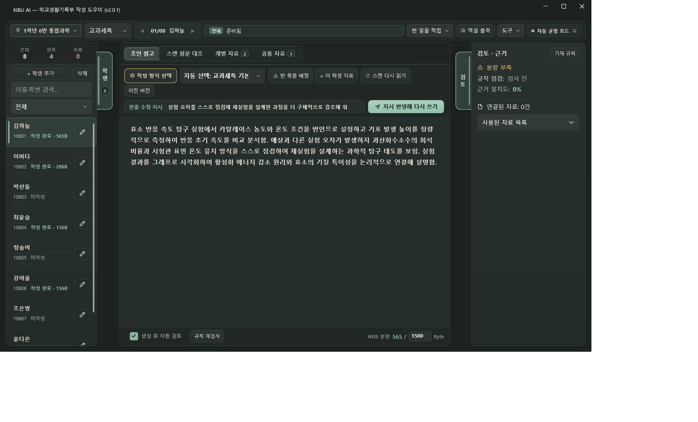

KIBU AI 쉬운 사용 설명서 (v1.5)
처음 켜시는 선생님도 위에서부터 순서대로 따라 하시면 10분 안에 익숙해지실 수 있습니다.
1. 설치와 API 키 넣기
설치 파일(KibuBeta-win-Setup.exe)을 실행하면 바탕화면에 바로가기가 생기고 프로그램이 바로 열립니다. 한 번 설치해 두면 앞으로 새 버전이 나왔을 때 앱을 켜는 것만으로 자동 업데이트 안내가 뜹니다.
OpenAI 또는 Gemini 키 중 하나만 있으면 됩니다
선생님 개인의 OpenAI 키 또는 Google Gemini 키 중 하나만 넣어도 모든 단계가 알아서 연결됩니다. (물론 두 키를 모두 넣으시면 손글씨 판독은 Gemini가, 문장 작성은 OpenAI가 나눠 맡는 하이브리드 조합으로 작동합니다.)
- OpenAI 키: platform.openai.com 로그인 → 결제 카드 등록(선불 충전 가능) → [Create new secret key]로
sk-로 시작하는 키 복사 - Gemini 키: Google AI Studio 로그인 → [Create API key]에서 발급 (대량 작업·개인정보 보호를 위해 결제 연동 등급 권장)
우측 상단 [설정]에서 키 입력하고 연결 확인하기
메인 화면 오른쪽 위 [설정]을 눌러 키를 붙여넣고 [API 키 연결 확인]을 눌러 보세요. "연결 정상 — 바로 사용하실 수 있습니다!" 문구가 나오면 하단 [저장]만 누르시면 됩니다.

- 복잡한 모델 선택은 안 하셔도 됩니다: 기본 선택된 [자동 균형 모드(권장)] 그대로 두시면 KIBU가 알아서 가장 알맞은 최신 모델을 연결해 줍니다. 연필 악필이 유독 심한 반일 때만 [악필 정밀 모드]로 바꿔 보세요.
- 스캔 활동지를 읽으실 때: 스캔 PDF나 휴대폰 사진을 넣으실 때는 설정 아래의 [외부 AI 이미지 분석 허용]을 켜 주세요. (깜빡하고 끄셨더라도 스캔 파일을 넣을 때 바로 켤 수 있는 안내 창이 뜹니다.)
- 쓰지 않는 달에는 0원이며, 쓴 만큼만 소액 과금됩니다.
- 일반 활동지 1종(2쪽 스캔) 기준 학생 1명당 약 30~110원, 30명 한 반 전체에 약 900~3,500원 정도면 충분합니다. (Gemini 키가 조금 더 저렴한 편입니다.)
- 한 번 읽은 스캔 활동지는 내 컴퓨터에 저장되므로, 작성 방향이나 한 줄 요청을 바꿔 초안을 다시 만들어도 스캔 판독 비용이 중복으로 나가지 않습니다!
2. 새 반 · 프로젝트 시작하기
KIBU를 처음 켜면 기본 작업공간이 바로 열려 있어 곧바로 시작하실 수 있습니다. 학급별로 깔끔하게 파일을 나누어 관리하려면 왼쪽 위의 [새 반/프로젝트]를 눌러 학급 이름(예: 1학년6반_통합과학)으로 만들어 주세요.
- 다음 반으로 넘어갈 때도 [새 반/프로젝트] 하나면 끝납니다: 6반 작업을 마치고 [새 반/프로젝트]를 누르면 6반 학생 명단과 활동지는 깨끗하게 비워지고, 선생님이 맞춰 두신 영역·맞춤 프롬프트·한 줄 요청·목표 바이트는 그대로 유지됩니다.
- 만약 [공통 자료함]에 수업 안내문이나 루브릭을 넣어 두셨다면, 다음 반에서도 그 공통자료를 그대로 이어 쓸지 친절하게 물어봅니다.
3. 학생 명렬표와 수업 자료 넣기
[① 자료 가져오기] 버튼을 누르거나 자료함에 파일을 끌어다 놓으면 됩니다. KIBU가 지원하는 파일과 한계를 한눈에 확인해 보세요.
스캔 PDF · 사진
종이 활동지, 포스터, 지도복합기로 스캔한 묶음 PDF나 휴대폰 사진(jpg·png·bmp·webp·tif) 속 손글씨와 표·그림을 선명하게 보정해 읽어냅니다.
한글 · 워드 · PPT
.hwpx, .hwp, .docx, .pptx, .txt한글이나 오피스가 열려 있어도 잠금 오류 없이 본문·표·슬라이드 발표자 노트까지 즉시 읽어냅니다.
나이스 명렬표 · 설문 엑셀
.xlsx, .csv나이스 출석부·명렬표를 넣으면 학생 목록이 만들어지고, 구글폼·네이버폼 응답 시트는 학번·이름에 맞춰 자동 분배됩니다.
방법 A: 30명 묶음 스캔 PDF 2초 만에 배정하기
나이스 명렬표 엑셀을 먼저 넣은 뒤, 학급 전체를 스캔한 묶음 PDF를 열면 AI를 기다리지 않고 페이지가 바로 나타납니다.

- 학생당 장수 고르기: 한 학생당 활동지가 2쪽이면 상단의 [2쪽씩] 버튼을 누릅니다.
- 번호순으로 스캔하셨다면: [① 학번 순서대로 일괄 배정] 버튼 하나만 누르고 오른쪽 아래 [선택한 자료 저장]을 누르면 끝납니다!
- 순서가 섞였거나 결석생이 빠져 있다면: 옆의 [순서가 섞였나요? AI로 학번·이름 자동 인식]을 누르면 AI가 손글씨 학번·이름을 찾아 배정해 줍니다.
- 이름을 안 쓴 활동지가 섞여 있다면: 버리지 마시고 [미배정·무기명 임시 보관]을 눌러 저장하세요. 미리 글자를 다 읽어 둔 뒤, 나중에 메인 화면 왼쪽 목록에서 실제 학번으로 고치면 기존 학생에게 깔끔하게 합쳐집니다.
방법 B: 명렬표 없이 한글·PPT·사진 파일들을 바로 끌어다 놓기
온라인 클래스룸 등에서 학생별로 제출받은 파일들(예: 10603_김정태_탐구보고서.hwpx, 1학년 6반 2번 김민우.pptx)이 폴더에 모여 있다면 명렬표를 따로 만들지 않아도 됩니다.

- 메인 화면의 [개별 자료함] 탭에 파일들을 한꺼번에 끌어다 놓으면, 파일 이름에서 학번과 이름을 읽어 학생 명단 추가부터 각자 보관함 분류까지 자동으로 끝냅니다.
- 수업 유인물이나 평가 기준표처럼 반 전체에 공통으로 쓰인 자료는 [공통 자료함] 탭에 끌어다 놓으세요.
- 캔바·미리캔버스 통그림 문서: 글자 없이 그림만 통째로 붙여넣은 한글·PPT 파일은 일반 텍스트가 비어 있습니다. 해당 프로그램에서 [PDF로 저장]해 넣어주시면 시각 AI가 그림 속 글자와 도표까지 모두 읽어냅니다.
- 암호·배포용 한글 문서 및 구형 파일(
.doc, .ppt, .xls, .heic): 암호를 풀거나 최신 형식(.docx, .pptx, .xlsx, .pdf, .jpg)으로 저장해 넣어 주세요.
4. 백그라운드 미리 읽기와 [스캔·추출 비교] 탭
스캔 자료를 저장하면 메인 화면 상단에 초록색 진행 배지(예: 스캔 손글씨 사전 판독 중 12/30건)가 나타납니다. 선생님이 작성 방향을 고르시는 동안 뒤에서 미리 글자를 읽어 두어 대기 시간을 확 줄여 줍니다. (다 끝날 때까지 기다리지 않고 바로 초안 생성을 누르셔도 괜찮습니다!)

- 원본과 읽힌 글 나란히 확인: 중앙의 [스캔·추출 비교] 탭을 누르면 왼쪽에는 활동지 스캔 원본이, 오른쪽에는 AI가 읽어낸 글자가 그대로 보입니다.
- 오독 단어 10초 수정: 연필이 흐려 잘못 읽힌 단어가 보이면 오른쪽 글상자에서 그 단어만 고친 뒤 [수정 반영 후 초안 바로 재생성]을 눌러 보세요. 이미지를 처음부터 다시 읽지 않고 10초 만에 정확한 초안으로 바뀝니다.
5. 5가지 핵심 방향과 '한 줄 요청' 활용하기
그냥 기본 설정으로 생성하셔도 훌륭한 초안이 나오지만, 이번 수행평가에서 특별히 강조하고 싶은 결이 있다면 두 가지 방법으로 아주 쉽게 지정할 수 있습니다.

- ① [맞춤 방향] 버튼의 5가지 프리셋: 과목에 상관없이 쓸 수 있는 5가지 대표 방향(
개념 적용·심화 탐구/비판적 분석·문제해결/창의 표현·산출물 완성/협력 소통·자기주도 성장/핵심 사실·역량 집약) 중 하나만 누르고 [저장 후 바로 적용]을 누르세요. - ② 메인 화면의 [한 줄 요청] 칸: 창을 따로 열지 않고도 메인 화면 입력칸에 "실험 오차의 원인을 스스로 분석한 과정을 강조해 주세요"처럼 한 줄만 적으면 개별 생성과 전체 생성 모두에 즉시 반영됩니다.
6. 개별 생성으로 확인하고, 학급 전체 이어 쓰기

- 먼저 학생 한 명을 골라 [③ 개별 초안 생성]을 눌러 문장 느낌과 분량을 확인해 보세요.
- 마음에 들면 오른쪽 위의 초록색 [전체 학생 생성]을 누릅니다. 이미 초안이 있는 학생이 섞여 있으면 "아직 초안이 없는 미작성 학생만 이어서 생성할까요?"라고 물어보므로, 앞서 다듬어 둔 학생의 글이 덮어써질 걱정이 없습니다.
7. 금지어 · 분량 · 비슷한 문장 점검하기
생성된 초안은 오른쪽 검토 카드와 왼쪽 학생 목록의 신호등 배지로 안전하게 점검됩니다.

- 문제 문장 바로 고치기: 과장된 표현이나 주의 단어가 발견되면 에디터 아래에 이슈 카드가 뜨고 본문에 형광펜 표시가 됩니다. 카드를 눌러 추천 문구로 [선택 항목 치환]을 누르면 바로 다듬어집니다.
- 영역별 바이트 자동 맞춤: 상단 영역 칩을 바꾸면 교과세특·창체(1,500B)와 행특(900B) 기준에 맞춰 목표 바이트와 학생 목록의 초과 경고 배지가 자동으로 바뀝니다.
- 학급 내 유사 문장 검사: [전체 학생 생성 ▼ → 학급 내 유사 문장 검사]를 누르면 반 안에서 문장이 70% 이상 비슷하게 나온 학생 쌍과 겹치는 핵심 단어를 짚어 주어 개성 있게 고칠 수 있습니다.
- 생성 이력 되돌리기: 여러 번 다시 만든 뒤 이전 초안이 더 좋았다면 [생성 이력] 버튼을 눌러 예전 문장으로 바로 복원할 수 있습니다.
8. 나이스용 엑셀로 내보내기
검토를 마친 뒤 오른쪽 위 하늘색 [엑셀 내보내기] 버튼을 누르면 현재 선택된 영역의 모든 학생 기록이 학번 | 이름 | 영역 | 생기부 초안 | 바이트(NEIS) 5열로 보기 좋게 줄바꿈되어 저장됩니다.

9. 우리 학교 주의 단어 추가 & 세부 모델 설정
[금지어·규칙 설정]으로 우리 학교만의 주의 표현 챙기기
검토 카드 제목 옆의 [금지어·규칙 설정](또는 상단 [도구·화면 → 기재 안전 규칙 관리자])을 열면 기본 제공되는 교육부 금지어 외에 우리 학교 축제 이름이나 피하고 싶은 단어를 직접 추가할 수 있습니다.

- 단어만 적고 [저장]을 누르면 초안 생성 때는 물론 에디터에 직접 타이핑할 때도 실시간으로 알려줍니다.
- 어떻게 적을지 막막할 때는 [AI로 규칙 만들기]를 눌러 평소 말하듯 설명해 보세요.
직접 모델을 골라 쓰고 싶을 때 (고급 모드)
평소에는 끄셔도 되지만, 특정 모델을 직접 지정해 보고 싶으시다면 [설정 → 고급 모드] 스위치를 켜서 단계별 모델을 고르실 수 있습니다.

10. 자주 묻는 질문 (FAQ)
궁금하신 질문을 클릭하면 답변이 펼쳐집니다. 해결되지 않는 문제는 프로그램 안의 [문의·건의] 버튼으로 편하게 알려주세요.
.hwpx, .hwp), 워드(.docx), 파워포인트(.pptx)는 그대로 잘 읽힙니다. 다만 암호·배포용 제한이 걸린 한글 문서이거나, 캔바·미리캔버스에서 글자까지 통째로 그림으로 만들어 붙여넣은 문서는 텍스트가 비어 있을 수 있습니다. 이럴 때는 한글이나 파워포인트에서 [다른 이름으로 저장 → PDF](또는 인쇄 → Microsoft Print to PDF)로 저장해 넣어 주시면 시각 AI가 그림 속 내용까지 모두 읽어냅니다.
11. 작업 파일 보관 및 백업 팁
- 설정과 내 맞춤 프롬프트 위치: 선생님이 만드신 맞춤 프롬프트와 금지어 규칙은 내 컴퓨터의
%LocalAppData%\Kibu폴더에 저장되어, 프로그램이 자동 업데이트되어도 지워지지 않고 그대로 유지됩니다. (설정 창 아래의 [폴더 열기]로 바로 열어볼 수 있습니다.) - 학급별 작업 보관하기: [새 반/프로젝트]로 만든 학급 폴더 안에는
project.kibu파일과 원본 활동지 사본, 판독 캐시가 한데 모여 있습니다. 학기가 끝난 뒤 이 폴더만 통째로 외장하드에 복사해 두시면 나중에 언제든 [프로젝트 열기]로 그대로 다시 열어볼 수 있습니다.